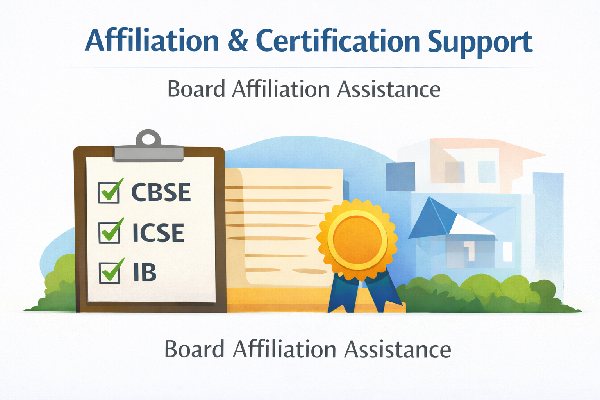
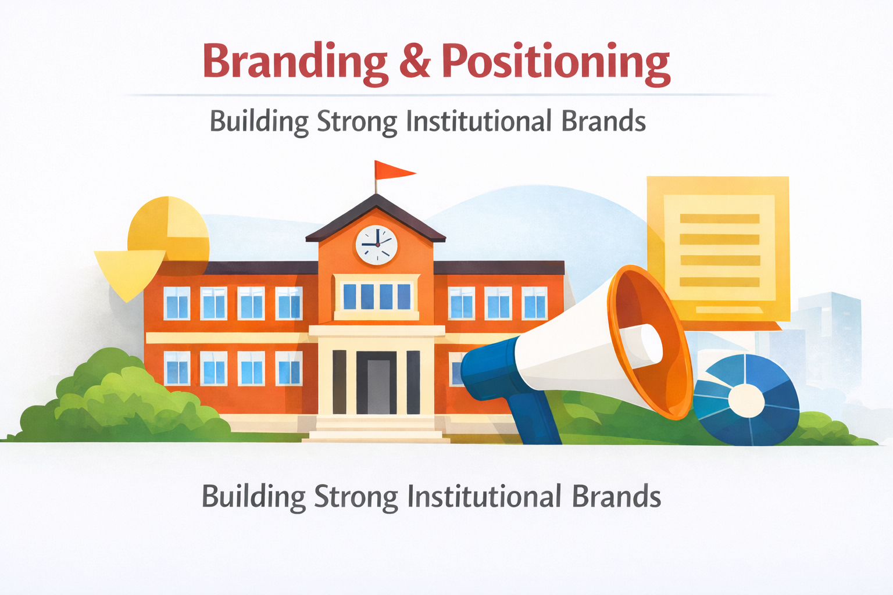
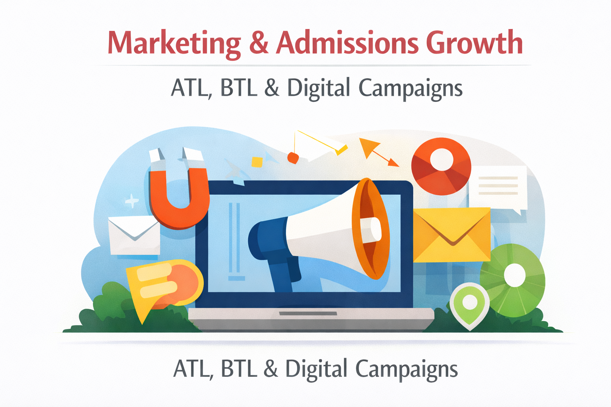
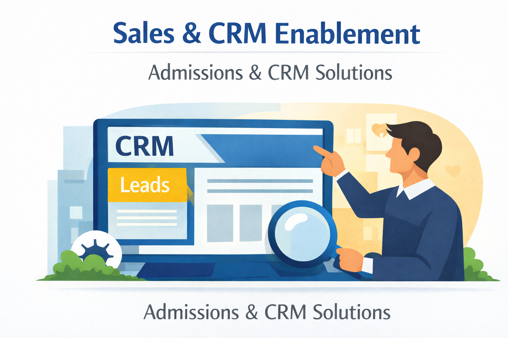
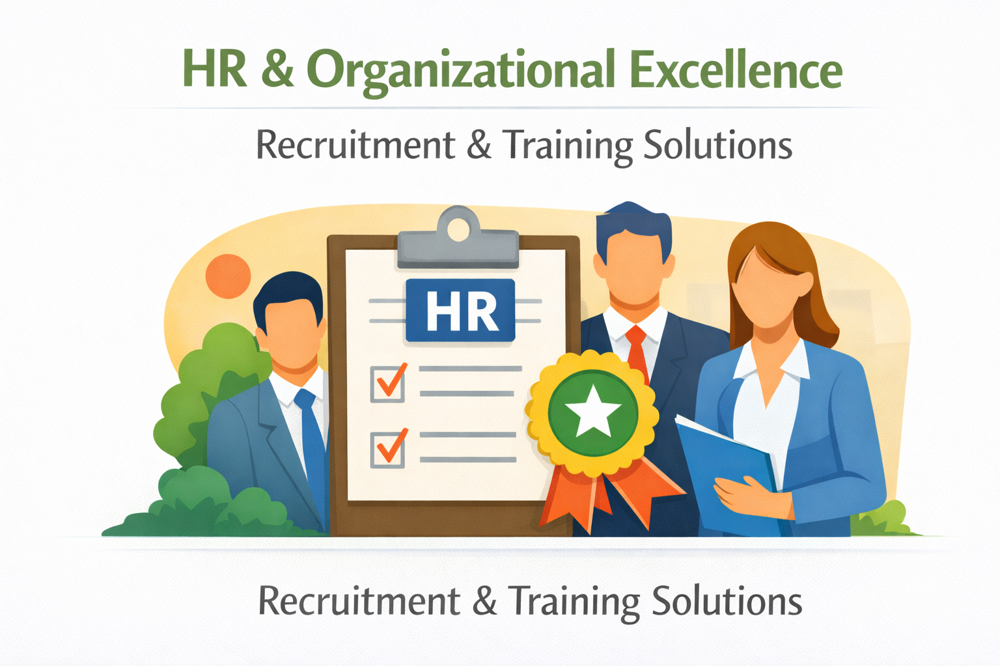
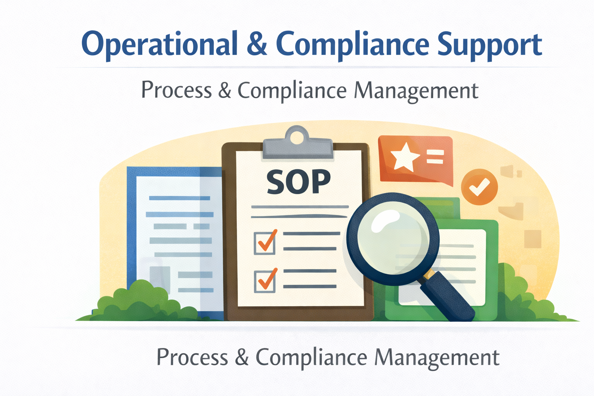

We are a professionally managed single-point partner. You focus on academic excellence; we manage your operational efficiency and sustainable growth systems.
Managed the legal and physical establishment of 6+ greenfield projects, including architectural oversight and securing CBSE/AICTE/UGC/State Dept approvals.
Building the organizational engine from scratch—hiring entire leadership teams and faculty bodies and implementing robust HR policies.
My core foundation. Having personally counseled 500,000+ students and parents, I possess a deep understanding of market psychology that drives enrollment.
Delivering high-converting admission systems and digital branding strategies that ensure Day-1 sustainability.
Managed the legal and physical establishment of 6+ greenfield projects, including architectural oversight and securing CBSE/AICTE/UGC/State Dept approvals.
Building the organizational engine from scratch—hiring entire leadership teams and faculty bodies and implementing robust HR policies.
My core foundation. Having personally counseled 500,000+ students and parents, I possess a deep understanding of market psychology that drives enrollment.
Delivering high-converting admission systems and digital branding strategies that ensure Day-1 sustainability.
Strategic assistance across critical domains to ensure your institution stands out in a competitive educational landscape.

End-to-end assistance for CBSE, ICSE, State Board, and prestigious international board affiliations.
Explore Details →
Development and execution of strong brand identities and long-term reputation management strategies.
Explore Details →
Integrated ATL, BTL, TTL, and digital marketing campaigns focused on lead generation and high conversion.
Explore Details →
Admissions funnel design, team training, modern CRM deployment, and parent engagement frameworks.
Explore Details →
Premium recruitment solutions, policy formulation, staff training, and performance management systems.
Explore Details →
Standard Operating Procedure (SOP) creation, rigorous audits, documentation, and process optimization.
Explore Details →Results-Oriented Approach
Single-Point Partnership
Long-Term Market Growth
Let's discuss your vision and create a customized growth roadmap aligned with your objectives.
Email For Customized Roadmap